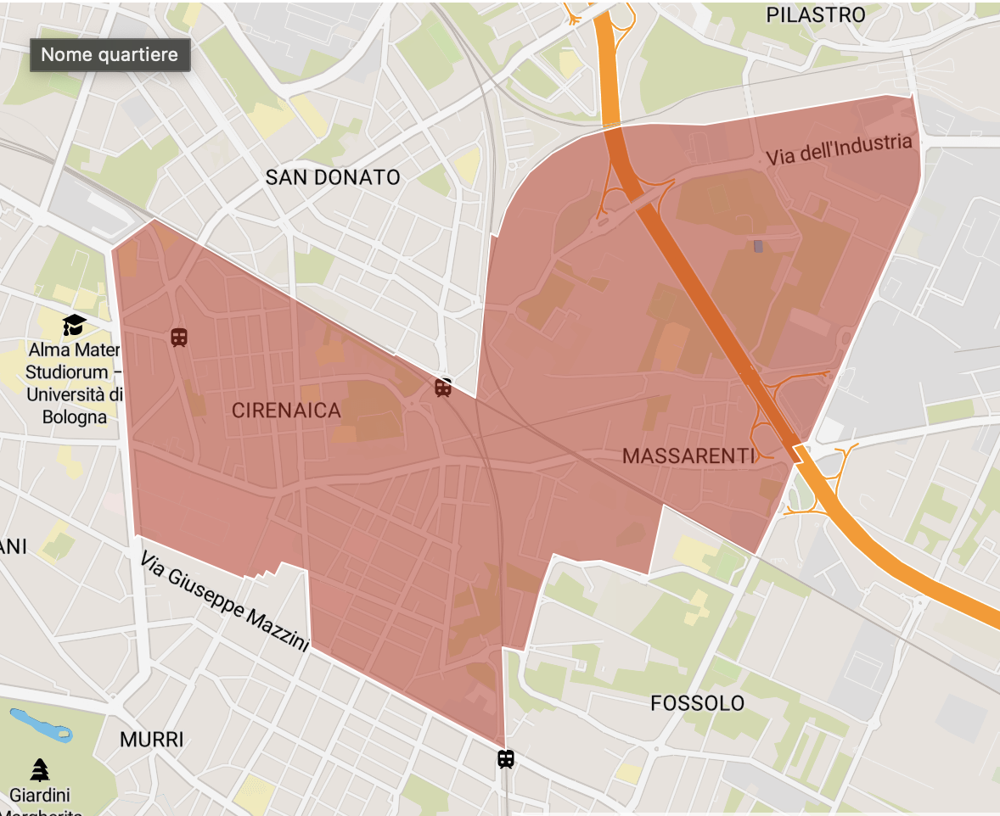
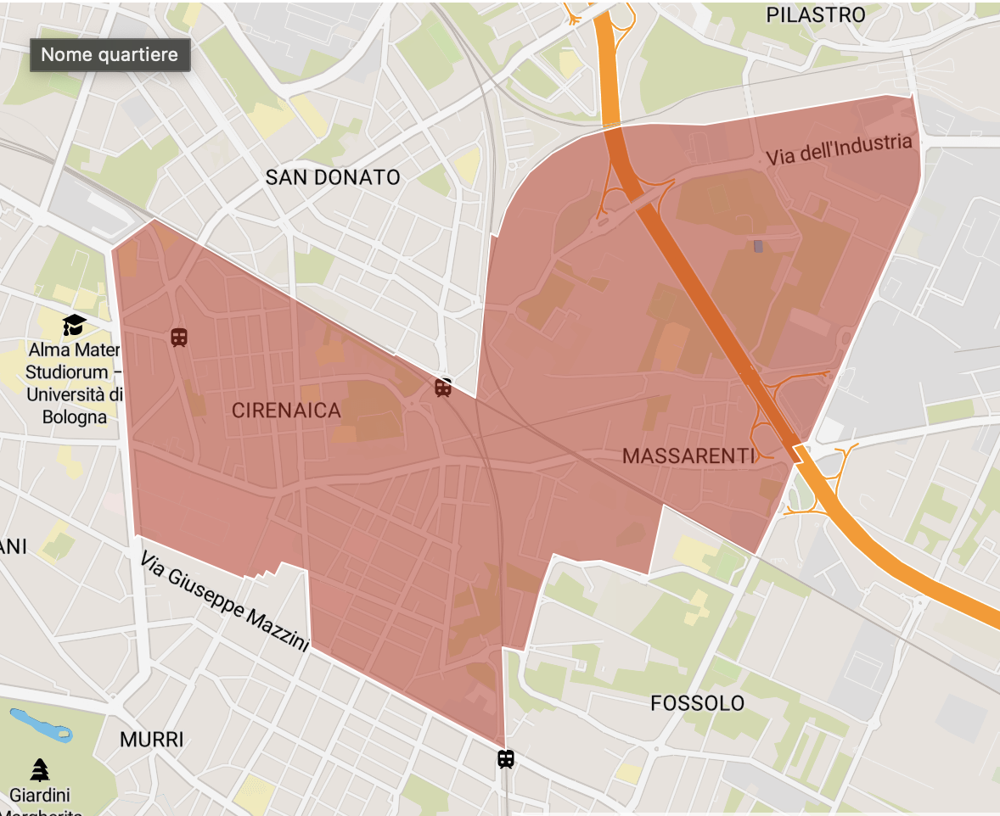
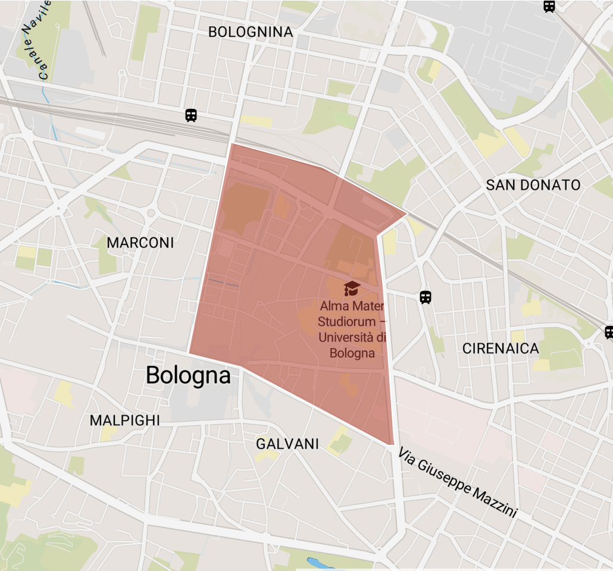
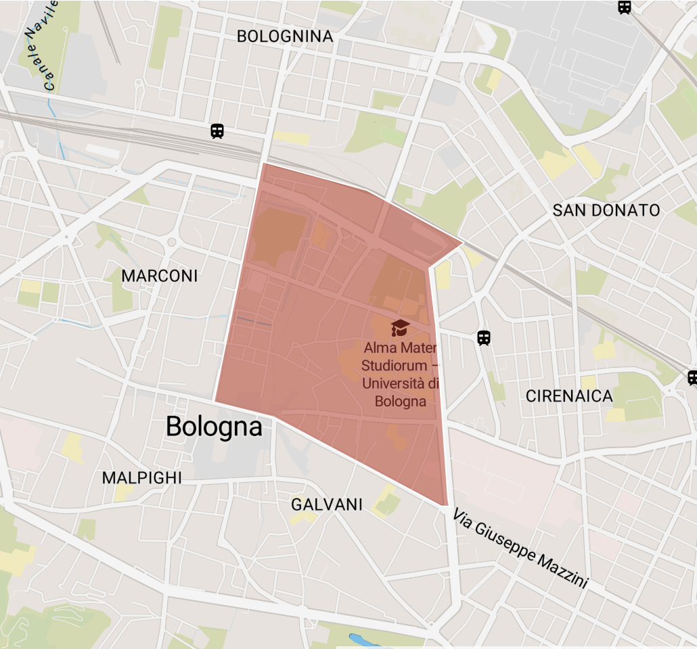

Eventi nella categoria: Senza Categoria
Naviga per Zona di Prossimità:
 BARCA (3 eventi)
BARCA (3 eventi)
 BEVERARA (3 eventi)
BEVERARA (3 eventi)
 BOLOGNINA (11 eventi)
BOLOGNINA (11 eventi)
 BORGO PANIGALE (1 eventi)

CIRENAICA - MASSARENTI - SCANDELLARA (2 eventi)
BORGO PANIGALE (1 eventi)

CIRENAICA - MASSARENTI - SCANDELLARA (2 eventi)
 CORTICELLA - DOZZA (2 eventi)
CORTICELLA - DOZZA (2 eventi)
 Fuori Bologna (22 eventi)
Fuori Bologna (22 eventi)
 GALVANI (41 eventi)

IRNERIO (24 eventi)
GALVANI (41 eventi)

IRNERIO (24 eventi)
 MALPIGHI (29 eventi)
MALPIGHI (29 eventi)
 MARCONI (10 eventi)
MARCONI (10 eventi)
 MURRI (2 eventi)
MURRI (2 eventi)
 OSSERVANZA - PADERNO (7 eventi)
OSSERVANZA - PADERNO (7 eventi)
 PONTEVECCHIO - MAZZINI (5 eventi)
Quartiere sconosciuto (9 eventi)
PONTEVECCHIO - MAZZINI (5 eventi)
Quartiere sconosciuto (9 eventi)
 SAFFI (4 eventi)
SAFFI (4 eventi)
 SAN DONATO NUOVO (1 eventi)
SAN DONATO NUOVO (1 eventi)
 SAN DONATO VECCHIO (3 eventi)
SAN DONATO VECCHIO (3 eventi)
 SARAGOZZA - SAN LUCA (6 eventi)
SARAGOZZA - SAN LUCA (6 eventi)
 VIA TOSCANA - S. RUFFILLO - MONTE DONATO (1 eventi)
VIA TOSCANA - S. RUFFILLO - MONTE DONATO (1 eventi)
Zona di Prossimità: BARCA
CicloffiCinema
Cicloriparazioni, Repair Cafè, Film d’Animazione, Libri e Merende al Treno della Barca
Zona di Prossimità: BARCA
Indirizzo: Via Nullo Baldini 3/a e 3/b Bologna
Area Statistica: VILLAGGIO DELLA BARCA
La chiesa di San Girolamo alla Certosa
visita guidata
Zona di Prossimità: BARCA
Indirizzo: via della Certosa, 18 - Bologna
Area Statistica: CANALE DI RENO
Treno Dei Desideri
a cura di Estragon
Zona di Prossimità: BARCA
Indirizzo: Piazza Giovanni XXIII - Bologna
Area Statistica: VILLAGGIO DELLA BARCA
Zona di Prossimità: BEVERARA
Giochi di una volta
laboratorio per bambini da 6 a 8 anni
Zona di Prossimità: BEVERARA
Indirizzo: Via della Beverara 123 Bologna
Area Statistica: BEVERARA
Ritorno a Itaca
Spettacolo teatrale a cura del Teatro Ridotto
Zona di Prossimità: BEVERARA
Indirizzo: via Marco Polo 21/13, Bologna
Area Statistica: BEVERARA
Scopri le moto bolognesi 1920-1970
mediazione di sala
Zona di Prossimità: BEVERARA
Indirizzo: Via della Beverara, 123 40131 Bologna
Area Statistica: BEVERARA
Zona di Prossimità: BOLOGNINA
77 posizioni libanesi - La luna nel pozzo
François Beaune presenta i suoi libri
Zona di Prossimità: BOLOGNINA
Indirizzo: via Serra 2/e Bologna
Area Statistica: PIAZZA DELL'UNITA'
Ad alta voce tra fuori e dentro
incontro con Alessandro Bergonzoni per ragazze e ragazzi dai 15 anni in su
Zona di Prossimità: BOLOGNINA
Indirizzo: Via Aristotele Fioravanti 18/3
Area Statistica: EX MERCATO ORTOFRUTTICOLO
La grande bellezza
concerto di SonoraCorda Ensemble | Giornata Europea della Cultura Ebraica
Zona di Prossimità: BOLOGNINA
Indirizzo: Via Matteotti 2, ang. Via de' Carracci
Area Statistica: PIAZZA DELL'UNITA'
La ianara
incontro con Licia Giaquinto
Zona di Prossimità: BOLOGNINA
Indirizzo: Via di Corticella, 104 40128 Bologna
Area Statistica: ARCOVEGGIO
Le tre colline artificiali di Bologna
pedalata e aperitivo con l'autore
Zona di Prossimità: BOLOGNINA
Indirizzo: via Antonio Di Vincenzo 33/A, Bologna
Area Statistica: PIAZZA DELL'UNITA'
Lento ritorno
presentazione del libro
Zona di Prossimità: BOLOGNINA
Indirizzo: Via di Corticella, 104 40128 Bologna
Area Statistica: ARCOVEGGIO
Nuovo Laboratorio scuola Danza Sociale di Claudia Rota
Treni verticali
Zona di Prossimità: BOLOGNINA
Indirizzo: via Matteotti 2 angolo via de’Carracci - Bologna
Area Statistica: PIAZZA DELL'UNITA'
Ombre Verdi
Incontro con Paolo Cacciari | Books for Climate Justice
Zona di Prossimità: BOLOGNINA
Indirizzo: Via de' Carracci, 73/A 40129 Bologna
Area Statistica: EX MERCATO ORTOFRUTTICOLO
Questioni giuridiche: legislazione italiana - legislazione europea
incontro nell'ambito di Laboratorio di conversazioni
Zona di Prossimità: BOLOGNINA
Indirizzo: Via di Corticella, 104 40128 Bologna
Area Statistica: ARCOVEGGIO
Razzismo coloniale italiano
incontro nell'ambito di Laboratorio di conversazioni
Zona di Prossimità: BOLOGNINA
Indirizzo: Via di Corticella, 104 40128 Bologna
Area Statistica: ARCOVEGGIO
TRE ESERCIZI SONORI NEL QUARTIERE NAVILE DI BOLOGNA
dalla Divina Commedia di Dante | laboratori di lettura e composizione sonora e vocale
Zona di Prossimità: BOLOGNINA
Indirizzo: Via Aristotele Fioravanti 18/3
Area Statistica: EX MERCATO ORTOFRUTTICOLO
Zona di Prossimità: BORGO PANIGALE
Un anno di dominazione fascista
Presentazione della nuova edizione
Zona di Prossimità: BORGO PANIGALE
Indirizzo: Via Legnano, 2 Bologna
Area Statistica: DUCATI-VILLAGGIO INA
Zona di Prossimità: CIRENAICA - MASSARENTI - SCANDELLARA
Cibi e paesaggi rari
presentazione del libro
Zona di Prossimità: CIRENAICA - MASSARENTI - SCANDELLARA
Indirizzo: Via Guelfa 40/4 Bologna
Area Statistica: GUELFA
MARCOVALDO la leggerezza dell’errore
laboratorio di letteratura espressiva con Anna Amadori
Zona di Prossimità: CIRENAICA - MASSARENTI - SCANDELLARA
Indirizzo: Via Bonaventura Cavallieri 3, Bologna
Area Statistica: CIRENAICA
Zona di Prossimità: CORTICELLA - DOZZA
Mediterraneo a fumetti
Incontro con la comic artist Lena Merhej in dialogo con Enrica Battista
Zona di Prossimità: CORTICELLA - DOZZA
Indirizzo: via di Corticella n. 104 - 40128 Bologna
Area Statistica: CROCE COPERTA
Mentre Bologna dorme
Incontro con l’autore.
Zona di Prossimità: CORTICELLA - DOZZA
Indirizzo: Via Gorki, 14 40128 Bologna
Area Statistica: SAN SAVINO
Zona di Prossimità: Fuori Bologna
ABC – Autori Biblioteca Conversazioni
una rassegna di realizzata grazie alla collaborazione fra Assemblea legislativa e Giunta regionale
Zona di Prossimità: Fuori Bologna
Indirizzo: Via Belle Arti 56 - Bologna 40126
Area Statistica: Fuori Bologna
Art Beats - I Musei Civici di Bologna in Musica
Il Settore Musei Civici Bologna e AEB Industriale, azienda leader internazionale nel settore dell’audio professionale con sede a Crespellano (BO), presentano una nuova partnership per regalare cultura alla città di Bologna. In occasione del cinquantesimo anniversario della sua nascita, AEB Industriale ha scelto i musei civici felsinei per festeggiare e condividere questo importante traguardo, offrendo al pubblico un doppio dono con ART BEATS - I Musei Civici di Bologna in Musica. L’iniziativa nasce da una co-progettazione culturale tra Settore Musei Civici Bologna e AEB Industriale che unisce arte e musica in un’innovativa modalità di fruizione e partecipazione. Sabato 16 e domenica 17 settembre i visitatori possono accedere a titolo eccezionalmente gratuito in sette sedi museali, nei rispettivi orari di apertura: Museo Civico Archeologico (h 10-19), Museo Civico Medievale (h 10-19), Collezioni Comunali d’Arte (h 10-18.30), MAMbo - Museo d’Arte Moderna di Bologna (h 10-19), Museo internazionale e biblioteca della musica (h 10-19), Museo del Patrimonio Industriale (h 10-18.30) e Museo civico del Risorgimento (h 10-18). Oltre che alla visione e al dialogo con l'arte, il pubblico è invitato all’ascolto di sette installazioni sonore inedite, una diversa per ogni sede espositiva, ognuna ispirata da un particolare, da una sala, da un manufatto identificativo in grado di raccontare l’unicità del museo associato. Le sette opere musicali sono commissionate ad altrettanti talentuosi musicisti e compositori che intrattengono con Bologna un legame speciale: Beatrice Antolini, Valentino Corvino, Davide Fasulo e Marco Ferrari, Marco Frattini, Gabriella Ghermandi e Fabrizio Puglisi, Piero Odorici, Guglielmo Pagnozzi. La suggestione visiva di questi sette luoghi di cultura di Bologna, Città della Musica UNESCO, si trasformerà così in note musicali per coinvolgere i visitatori in un’esperienza immersiva aumentata. Attraverso la creazione di un QR Code ogni composizione resterà a disposizione del museo in via permanente, per permettere a tutti gli interessati di ascoltarle in occasione della loro visita. Il progetto è stato sviluppato con il supporto di Laboratorio delle Idee, agenzia di comunicazione specializzata in consulenza strategica e progetti culturali.
Zona di Prossimità: Fuori Bologna
Area Statistica: Fuori Bologna
Bologna Game Farm: Acceleriamoci!
Sei giornate gratuite di accelerazione, aperte a tutto il mondo dei videogiochi. Posti limitati, è richiesta iscrizione.
Zona di Prossimità: Fuori Bologna
Indirizzo: Piazza della Costituzione 4 - Bologna
Area Statistica: Fuori Bologna
Bologna sarà transitoria, ma io mi sento a casa
Studiare, abitare, vivere all‘ombra delle Due Torri | mostra
Zona di Prossimità: Fuori Bologna
Indirizzo: Via Zamboni, 33 - Bologna
Area Statistica: Fuori Bologna
Bologna-Raticosa
33^ edizione
Zona di Prossimità: Fuori Bologna
Indirizzo: Livergnano
Area Statistica: Fuori Bologna
CONFLITTO e VERITÀ
Giornata Mondiale della Filosofia
Zona di Prossimità: Fuori Bologna
Area Statistica: Fuori Bologna
Dal buio
Reading concerto e presentazione del libro di Virginia Farina
Zona di Prossimità: Fuori Bologna
Indirizzo: via Santo Stefano 119, Bologna
Area Statistica: Fuori Bologna
Dove non mi hai portata
con Maria Grazia Calandrone, Stefania Della Corte
Zona di Prossimità: Fuori Bologna
Area Statistica: Fuori Bologna
Extrabold. Per un design femminista, inclusivo, antirazzista, non binario.
Ellen Lupton dialoga con Riccardo Falcinelli. A cura di Quinto Quarto Edizioni
Zona di Prossimità: Fuori Bologna
Indirizzo: via don Minzoni 14 Bologna
Area Statistica: Fuori Bologna
Hold me while I’m Naked: Lewis G. Burton in dialogo con Beatrice Favaretto e Cassero LGBTQ Center
Nuovo Forno del Pane Outdoor Edition. Public Program
Zona di Prossimità: Fuori Bologna
Indirizzo: via Don Minzoni 18 Bologna
Area Statistica: Fuori Bologna
LIBERE, NON CORAGGIOSE
presentazione del libro
Zona di Prossimità: Fuori Bologna
Indirizzo: Via Castiglione 7 - Bologna
Area Statistica: Fuori Bologna
La sposa del vento
presentazione del libro
Zona di Prossimità: Fuori Bologna
Indirizzo: Via Lame 182/A 40013 Castel Maggiore, Emilia-Romagna
Area Statistica: Fuori Bologna
Laboratorio ’45 si racconta alla città
laboratorio su Resistenza e Liberazione dal nazifascismo
Zona di Prossimità: Fuori Bologna
Indirizzo: Via Emilia 80, 40026 Imola (BO)
Area Statistica: Fuori Bologna
Medici, Botanici, Alchimisti
Viaggio tra scienza e arte nelle collezioni del Rizzoli | mostra
Zona di Prossimità: Fuori Bologna
Indirizzo: Via Giulio Cesare Pupilli, 1, 40136 Bologna BO
Area Statistica: Fuori Bologna
Michele Vannelli e Francesco Tasini
Il Sabato all’Accademia - Concerti di primavera | Stagione 2024
Zona di Prossimità: Fuori Bologna
Indirizzo: Piazza Maggiore - Bologna
Area Statistica: Fuori Bologna
Nuove tecnologie della geomatica per l’archeologia
conferenza
Zona di Prossimità: Fuori Bologna
Indirizzo: via Porta di Castello 3
Area Statistica: Fuori Bologna
Padanu: influenze assiro-babilonesi sulla epatomanzia etrusca
conferenza
Zona di Prossimità: Fuori Bologna
Indirizzo: via Porta di Castello 3
Area Statistica: Fuori Bologna
Premio Letterario Città di Zola Predosa
Tre giorni di appuntamenti dedicati agli appassionati di lettura
Zona di Prossimità: Fuori Bologna
Indirizzo: Zola Predosa bologna
Area Statistica: Fuori Bologna
Rocket Girls - The Closing Party
Serata finale della seconda edizione della rassegna
Zona di Prossimità: Fuori Bologna
Area Statistica: Fuori Bologna
Sto al MAMbo per le feste. Pasqua 2024
pomeriggi al museo durante le vacanze scolastiche
Zona di Prossimità: Fuori Bologna
Indirizzo: Via Manzoni, 4 40121 Bologna
Area Statistica: Fuori Bologna
Uragami Gyokudô (1745-1820): il pennello e la cetra
Visionari
Zona di Prossimità: Fuori Bologna
Indirizzo: Via Manzoni, 4 40121 Bologna
Area Statistica: Fuori Bologna
Visite guidate per famiglie a Casa Carducci
Due visite speciali per bambini (6-10 anni) e genitori, con dimostrazione e distribuzione gratuita del gioco GioCar
Zona di Prossimità: Fuori Bologna
Indirizzo: Piazza Giosuè Carducci, 5, 40125 Bologna BO
Area Statistica: Fuori Bologna
Zona di Prossimità: GALVANI
BRIVIDI AL BARACCANO
Ciclo di incontri su 'giallo' e 'noir' a Bologna
Zona di Prossimità: GALVANI
Indirizzo: Via Santo Stefano, 119 40125 Bologna
Area Statistica: GALVANI-2
Bologna Yarn Crawl 2023
Wooldone, vincitore Incredibol!, lancia l’edizione zero del festival (e della festa) dedicata al mondo del knitting, dei filati e del crochet, grazie alla collaborazione con numerose realtà.
Zona di Prossimità: GALVANI
Indirizzo: Bologna
Area Statistica: GALVANI-1
Bologna di carta. Guida letteraria della città
con Riccardo Gasperina Geroni
Zona di Prossimità: GALVANI
Indirizzo: Piazza del Nettuno, 3, Bologna
Area Statistica: GALVANI-1
Bologna, la Musica – Racconti e suoni di una città
Una serata in parole e canzoni per viaggiare nella storia della popular music della città, guidati dai conduttori Paola Maugeri e Luca Barbarossa
Zona di Prossimità: GALVANI
Indirizzo: Piazza Maggiore - Bologna
Area Statistica: GALVANI-1
Carlo Cesare Malvasia oggi, ieri, domani
Lectio magistralis di Elizabeth Cropper
Zona di Prossimità: GALVANI
Indirizzo: Piazza Galvani 1, 40124 Bologna
Area Statistica: GALVANI-1
Classico Futuro Festival
Quattro giorni di incontri, spettacoli, workshop a cura del Centro di Poesia Contemporanea dell’Università di Bologna.
Zona di Prossimità: GALVANI
Area Statistica: GALVANI-1
Compianto. Un concerto in memoria di Graziano Campanini
Mercoledì 8 giugno 2022, alle ore 21.00, presso il santuario di Santa Maria della Vita, Genus Bononiae organizza un concerto in memoria di Graziano Campanini. Compianto. Un concerto in memoria di Graziano Campanini Francesco Tasini, organoCORO DELLA CAPPELLA MUSICALE ARCIVESCOVILE DELLA BASILICA DI S. PETRONIOMichele Vannelli, direttore Programma JOHANN SEBASTIAN BACH (Eisenach, 1685 – Lipsia, 1750), Fuga sopra Magnificat BWV 733GIACOMO ANTONIO PERTI (Bologna, 1661 – ivi, 1756), Responsori delle tenebre del Venerdì SantoJ. S. BACH, Preludio al corale «Aus tieffer Noth schreiy ich zu dir» BWV 687GIOACHINO ROSSINI (Pesaro, 1792 – Passy, 1868), O salutaris HostiaANTON BRUCKNER (Ansfelden, 1824 – Vienna, 1896), Os iustiJ. S. BACH, Fantasia sopra «Jesu meine Freude» BWV 713MICHELE VANNELLI, Maria mater GratiæJOSEPH RHEINBERGER (Vaduz, 1839 – Monaco di Baviera, 1901), AbendliedJ. S. BACH, Fantasia sopra «Christ lag in Todes Banden» BWV 695FRANCIS POULENC (Parigi, 1899 – ivi, 1963), Salve Regina Ingresso gratuito fino a esaurimento posti.
Zona di Prossimità: GALVANI
Indirizzo: via Clavature 8-10 - Bologna
Area Statistica: GALVANI-1
Con cuore di donna. Alcesti – Teti – Atena
presentazione del libro di Giuseppina Norcia, VandA Edizioni, 2024
Zona di Prossimità: GALVANI
Indirizzo: via del Piombo, 5 - Bologna
Area Statistica: GALVANI-2
Cori di Festa e di Fede
concerto nell’ambito del Festival della Scienza Medica 2024
Zona di Prossimità: GALVANI
Indirizzo: Strada Maggiore 43, Bologna
Area Statistica: GALVANI-2
Da Quémalo Todo a Brucia tutto: pratiche di protesta, autodifesa e rivolta femminista
incontro e dibattito
Zona di Prossimità: GALVANI
Indirizzo: via del Piombo, 5 - Bologna
Area Statistica: GALVANI-2
Donne in letteratura: l’autorialità femminile
Incontro con Martine Reid in dialogo con Patrizia Caraffi
Zona di Prossimità: GALVANI
Indirizzo: via del Piombo, 5 - Bologna
Area Statistica: GALVANI-2
E noi splendiamo, invece
con Alessandro Zan, Matteo Lepore, Federica Mazzoni e Eleonora Capelli.
Zona di Prossimità: GALVANI
Indirizzo: Piazza del Nettuno, 3, Bologna
Area Statistica: GALVANI-1
Etica Islamica contemporanea
presentazione del libro di Ignazio De Francesco
Zona di Prossimità: GALVANI
Indirizzo: Piazza Galvani 1 Bologna
Area Statistica: GALVANI-1
Giosue Carducci. Lezioni su Petrarca (1861 - 1862)
Presentazione volume
Zona di Prossimità: GALVANI
Indirizzo: Piazza Giosuè Carducci, 5, 40125 Bologna
Area Statistica: GALVANI-2
Giuseppe Raimondi racconta Giorgio Morandi. L’uomo e l’artista
a cura di Settore Musei Civici Bologna
Zona di Prossimità: GALVANI
Indirizzo: Via Fondazza 36, Bologna
Area Statistica: GALVANI-2
Il nome della rosea
con Flavio Vanetti e Paolo Francia
Zona di Prossimità: GALVANI
Indirizzo: Piazza del Nettuno, 3 Bologna
Area Statistica: GALVANI-1
Illustratori a Palazzo
In occasione della chiusura della mostra Eccellenze italiane
Zona di Prossimità: GALVANI
Indirizzo: Piazza del Nettuno, 1/C, Bologna
Area Statistica: GALVANI-1
L'Unità. Una storia, tante storie
con Roberto Roscani, Pierluigi Stefanini, Luca Bottura, Andrea Aloi
Zona di Prossimità: GALVANI
Indirizzo: Piazza del Nettuno, 3 Bologna
Area Statistica: GALVANI-1
L'artiglio del tempo
presentazione del libro
Zona di Prossimità: GALVANI
Indirizzo: via De’ Musei 8 Bologna
Area Statistica: GALVANI-1
L'invincibile estate di Liliana
incontro del Gdl Grazia
Zona di Prossimità: GALVANI
Indirizzo: via del Piombo, 5 - Bologna
Area Statistica: GALVANI-2
La Cina e il nuovo ordine mondiale
Presentazione libri
Zona di Prossimità: GALVANI
Indirizzo: Piazza Galvani 1 Bologna
Area Statistica: GALVANI-1
La Notte dei Musei
In occasione della Notte dei Musei, Casa Carducci e il Museo civico del Risorgimento saranno aperti con orario continuato dalle 10.00 alle 24.00
Zona di Prossimità: GALVANI
Indirizzo: Piazza Giosuè Carducci, 5, 40125 Bologna
Area Statistica: GALVANI-2
La Voce Regina. Tris di voci: Balestrini-Stratos-Zavalloni
con Cristina Zavalloni e Enzo Minarelli
Zona di Prossimità: GALVANI
Indirizzo: Piazza del Nettuno, 3 Bologna
Area Statistica: GALVANI-1
Le strutture del potere
presentazione del volume di Sabino Cassese
Zona di Prossimità: GALVANI
Indirizzo: Piazza Galvani 1 Bologna
Area Statistica: GALVANI-1
L’Italia è un paese razzista
presentazione del libro
Zona di Prossimità: GALVANI
Indirizzo: Via Fondazza, 40 Bologna
Area Statistica: GALVANI-2
L’incanto della danza | II edizione
danza, musica e parola
Zona di Prossimità: GALVANI
Indirizzo: Piazza Galvani, 1, 40124 Bologna
Area Statistica: GALVANI-1
Ne leggiamo un altro?
Spunti e idee per;leggere a bambine e bambini
Zona di Prossimità: GALVANI
Area Statistica: GALVANI-1
Nikola Meeuwsen
Il Sabato all’Accademia - Concerti di primavera | Stagione 2024
Zona di Prossimità: GALVANI
Indirizzo: Via Guerrazzi 13 Bologna
Area Statistica: GALVANI-1
Pane nostro
presentazione del libro
Zona di Prossimità: GALVANI
Indirizzo: piazza Galvani 1 Bologna
Area Statistica: GALVANI-1
Partire (S)vantaggiati
con Silvia Camporesi e Elisabetta Lalumera
Zona di Prossimità: GALVANI
Indirizzo: Piazza del Nettuno, 3, Bologna
Area Statistica: GALVANI-1
Past Present and Future of Public Space 2024
Conferenza internazionale - Sessione di apertura
Zona di Prossimità: GALVANI
Indirizzo: Piazza Galvani 1, 40124 Bologna
Area Statistica: GALVANI-1
Pinocchio viaggio dell'Anima
Incontro Spettacolo
Zona di Prossimità: GALVANI
Area Statistica: GALVANI-1
Preferisco Wisława Szymborska: poesia in dialogo
Incontro di poesia
Zona di Prossimità: GALVANI
Indirizzo: Piazza Galvani 1 - Bologna
Area Statistica: GALVANI-1
Preferisco la poesia: scrivere di sé seguendo i passi di grandi poetesse
Laboratorio di scrittura e di recitazione con Loredana D’Emelio e Tita Ruggeri
Zona di Prossimità: GALVANI
Indirizzo: via del Piombo, 5 - Bologna
Area Statistica: GALVANI-2
Quartetto Alioth
Il Sabato all’Accademia - Concerti di primavera | Stagione 2024
Zona di Prossimità: GALVANI
Indirizzo: Via Guerrazzi 13 Bologna
Area Statistica: GALVANI-1
Settant'anni di Mulino
gli incontri
Zona di Prossimità: GALVANI
Indirizzo: Piazza San Domenico, 12 - Bologna
Area Statistica: GALVANI-2
Sopravvivere a(lla)scuola
presentazione del libro
Zona di Prossimità: GALVANI
Indirizzo: via De’ Musei 8 Bologna
Area Statistica: GALVANI-1
Strenna Storica Bolognese
Presentazione della Strenna Storica Bolognese, Anno LXXIV, 2024
Zona di Prossimità: GALVANI
Indirizzo: Piazza Galvani 1, 40124 Bologna
Area Statistica: GALVANI-1
UNA COME LEI -2024
Incontri e pratiche di poesia / Archivio digitale 2024
Zona di Prossimità: GALVANI
Indirizzo: via del Piombo, 5 - Bologna
Area Statistica: GALVANI-2
Vite poetiche
Storie di donne e poesie. Una seconda stagione che propone 10 puntate e 10 poete.
Zona di Prossimità: GALVANI
Area Statistica: GALVANI-1
www.storiaememoriadibologna.it - una risorsa per la didattica
presentazione del portale Storia e Memoria di Bologna
Zona di Prossimità: GALVANI
Indirizzo: Piazza Carducci 5 Bologna
Area Statistica: GALVANI-2
Zona di Prossimità: IRNERIO
Arabpop N. 6 - Palestina
presentazione del numero della rivista
Zona di Prossimità: IRNERIO
Indirizzo: via del Pallone 8 - Bologna
Area Statistica: IRNERIO-2
Belmeloro legge
La zona intorno a piazza Verdi si popola di libri
Zona di Prossimità: IRNERIO
Indirizzo: Piazza Vedi, Bologna
Area Statistica: IRNERIO-2
Bhūmi yoniḥ | Nel ventre della terra
Frida World. Danza dell’altro mondo;| Frida nel Parco 2021
Zona di Prossimità: IRNERIO
Indirizzo: Parco della Montagnola - Via Irnerio 2/4, 40126 Bologna
Area Statistica: IRNERIO-2
Chiado, Carmo, Parigi e le Arti nella sfera pubblica
Mostra delle opere eseguite nell’ambito del progetto di collaborazione internazionale | Opening 11 marzo ore 11
Zona di Prossimità: IRNERIO
Indirizzo: Via delle Belle Arti, 54, 40126 Bologna
Area Statistica: IRNERIO-2
Consonanze (a) martellate. Storie di flauti, lettere, duetti e un Metodo da Re: Padre Martini e Johann Joachim Quantz a 250 anni dalla morte
concerto | wunderkammer il museo delle meraviglie
Zona di Prossimità: IRNERIO
Indirizzo: Strada Maggiore 34, Bologna
Area Statistica: IRNERIO-1
Disegno dal vero Nudedoodle
sessione di disegno dal vero con modelli. Special Edition BCBF25
Zona di Prossimità: IRNERIO
Indirizzo: Via Giuseppe Petroni, 13/a, 40126 Bologna
Area Statistica: IRNERIO-2
Fuoco Incrociato. Le vittime della guerra contro i narcos
Marcela Turati presenta il suo libro
Zona di Prossimità: IRNERIO
Indirizzo: Via Belmeloro 1, 1/E Bologna,
Area Statistica: IRNERIO-2
Il diritto d’autore nelle immagini: linee guida per illustratori, grafici e fumettisti
incontro con Maria Paola Pinna, a cura di Giulia Sollai
Zona di Prossimità: IRNERIO
Indirizzo: Via Irnerio 35 , Bologna
Area Statistica: IRNERIO-2
Il giardino d'acqua
Andrea Pagani presenta il suo libro insieme a Wu Ming 2
Zona di Prossimità: IRNERIO
Indirizzo: Via Irnerio 27 - Bologna
Area Statistica: IRNERIO-2
Il giovane Cavalcaselle
«Il più curioso, il più intrepido, il più appassionato di tutti gli affamati di pittura»
Zona di Prossimità: IRNERIO
Indirizzo: piazza Galvani, 1 Bologna
Area Statistica: IRNERIO-1
Il mio viaggio
concerto | wunderkammer il museo delle meraviglie
Zona di Prossimità: IRNERIO
Indirizzo: Strada Maggiore, 34 - Bologna
Area Statistica: IRNERIO-1
In and Out of Focus
Presentazione del sesto numero del journal internazionale Dune. Scritture su moda, progetto e cultura visuale
Zona di Prossimità: IRNERIO
Indirizzo: via delle Belle Arti, 54 Bologna
Area Statistica: IRNERIO-2
Io sono l'indiano
Presentazione del libro di Antonio Fusco
Zona di Prossimità: IRNERIO
Indirizzo: Via Irnerio, 2/3 40126 Bologna
Area Statistica: IRNERIO-2
It's (NOT) Only Rock'n'Roll
le foto di Mark Allan | mostra
Zona di Prossimità: IRNERIO
Indirizzo: Strada Maggiore 34, Bologna
Area Statistica: IRNERIO-1
La cultura della cura
ciclo di incontri promossi dal Centro Studi Medical Humanities dell’Università di Bologna
Zona di Prossimità: IRNERIO
Indirizzo: via Zamboni, 32 - 40126 - Bologna
Area Statistica: IRNERIO-2
La scuola che sarà
Due giornate per immaginare insieme la scuola del futuro, tra talk, laboratori, incontri.
Zona di Prossimità: IRNERIO
Indirizzo: Vicolo Bolognetti 2 - 40125 Bologna
Area Statistica: IRNERIO-2
Le parole che mi hai lasciato
presentazione del libro
Zona di Prossimità: IRNERIO
Indirizzo: via Irnerio, 2/3 Bologna
Area Statistica: IRNERIO-2
Madre Terra
Chiara Marchelli presenta il suo libro
Zona di Prossimità: IRNERIO
Indirizzo: Via Belmeloro 1, 1/E Bologna,
Area Statistica: IRNERIO-2
Mediterranea saving humans
Nodi Bolina. Diari di Mediterranea di Quaderni Urbani
Zona di Prossimità: IRNERIO
Indirizzo: Via Belmeloro 1, 1/E Bologna,
Area Statistica: IRNERIO-2
Pasolini nasce a Bologna…
Portico dei servi e la piazza antistante la Basilica di Santa Maria dei Servi
Zona di Prossimità: IRNERIO
Indirizzo: Strada Maggiore - Bologna
Area Statistica: GALVANI-2
Record Store Day Italia 2024
Da SEMM | music store more una festa lungo un giorno
Zona di Prossimità: IRNERIO
Indirizzo: via Guglielmo Oberdan 24, 40126 Bologna
Area Statistica: IRNERIO-1
Strani giorni | mostra
mostra di Bogdan Crǎciun
Zona di Prossimità: IRNERIO
Indirizzo: Via Sant’Apollonia, 25 Bologna
Area Statistica: IRNERIO-2
Sumaṅgalī - Mani colme di gioia
Frida World – Danze dell’altro mondo | Frida nel Parco 2021
Zona di Prossimità: IRNERIO
Indirizzo: Parco della Montagnola - Via Irnerio 2/4, 40126 Bologna
Area Statistica: IRNERIO-2
WALC - Walking Landscapes of Urban Cultures
Kick-off Meeting
Zona di Prossimità: IRNERIO
Indirizzo: Via Zamboni 38
Area Statistica: IRNERIO-2
Zona di Prossimità: MALPIGHI
Atlantico club
BLCKEBY live + Arktah' djset @ Granata;
Zona di Prossimità: MALPIGHI
Indirizzo: Via S. Rocco, 16, 40122 Bologna BO
Area Statistica: MALPIGHI-2
Cool Britannia. La cultura inglese degli anni Novanta
Ciclo di incontri a cura di Silvia Albertazzi e Gino Scatasta in collaborazione con il Dipartimento LILEC, Università di Bologna
Zona di Prossimità: MALPIGHI
Indirizzo: piazza Nettuno, 3 Bologna
Area Statistica: MALPIGHI-1
Dare forma alle idee
workshop gratuito di 2 ore per impostare business a ownership condivisa e impact-driven
Zona di Prossimità: MALPIGHI
Indirizzo: Piazza Nettuno 3 Bologna
Area Statistica: MALPIGHI-1
Dimora Di Ruggine
Khadija Abdalla Bajaber presenta il suo libro
Zona di Prossimità: MALPIGHI
Indirizzo: Piazza Maggiore 6 Bologna
Area Statistica: MALPIGHI-1
Fortuna
Nicolò Govoni;presenta il suo libro
Zona di Prossimità: MALPIGHI
Indirizzo: piazza Nettuno 3 Bologna
Area Statistica: MALPIGHI-1
Gli Assiri all’ombra delle Due Torri
Un mattone iscritto della ziggurat di Kalkhu in Iraq e gli scavi della Missione Archeologica Iracheno-Italiana a Ninive | mostra
Zona di Prossimità: MALPIGHI
Indirizzo: Via Manzoni, 4, 40121 Bologna
Area Statistica: MARCONI-1
IFAB: UN PONTE TRA TECNOPOLO E SOCIETÀ
evento organizzato dalla Fondazione IFAB sull'impatto e il valore del supercalcolo e dei big data sul nostro futuro.
Zona di Prossimità: MALPIGHI
Indirizzo: Piazza Maggiore, 6 Bologna
Area Statistica: MALPIGHI-1
Il mio letto è una nave
presentazione del libro
Zona di Prossimità: MALPIGHI
Indirizzo: via Cesare Battisti, 24 - Bologna
Area Statistica: MALPIGHI-1
Il giallo nei fumetti di Giuseppe Palumbo
con Giuseppe Palumbo
Zona di Prossimità: MALPIGHI
Indirizzo: Piazza del Nettuno 3 - Bologna
Area Statistica: MALPIGHI-1
Il grembo paterno
Chiara Gamberale presenta il suo libro
Zona di Prossimità: MALPIGHI
Indirizzo: piazza Nettuno 3 Bologna
Area Statistica: MALPIGHI-1
Le torri Garisenda e Asinelli nella Bologna medievale
conferenza | Operazione Garisenda. Storie narrate, sognate e vissute
Zona di Prossimità: MALPIGHI
Indirizzo: Via Manzoni 4 Bologna
Area Statistica: MARCONI-1
Lufo per il ventunesimo compleanno di Salaborsa
Martedì 13 dicembre 2022 Biblioteca Salaborsa celebra il ventunesimo anno di apertura. Vieni a ritirare il manifesto e i segnalibri in biblioteca.
Zona di Prossimità: MALPIGHI
Indirizzo: Piazza del Nettuno, 3 Bologna
Area Statistica: MALPIGHI-1
Memorie plurali a scuola
Incontro con Espérance Hakuzwimana
Zona di Prossimità: MALPIGHI
Indirizzo: Via Sant’Isaia 20, Bologna
Area Statistica: MALPIGHI-2
Missoni. La grande moda italiana
In occasione del;centenario della nascita di Ottavio Missoni
Zona di Prossimità: MALPIGHI
Indirizzo: piazza Nettuno 3 Bologna
Area Statistica: MALPIGHI-1
Noi due ci apparteniamo
con Roberto Saviano
Zona di Prossimità: MALPIGHI
Indirizzo: Piazza Nettuno 3 Bologna
Area Statistica: MALPIGHI-1
Oro puro
con Fabio Genovesi
Zona di Prossimità: MALPIGHI
Indirizzo: Piazza del Nettuno, 3, Bologna
Area Statistica: MALPIGHI-1
PASSEGGIATE LETTERARIE
Passeggiare per Bologna con Francesco Petrarca ed Ezio Raimondi
Zona di Prossimità: MALPIGHI
Indirizzo: Via Manzoni 4 Bologna
Area Statistica: MARCONI-1
Past Present and Future of Public Space 2024-Salaborsa
Conferenza internazionale - Sessione di chiusura
Zona di Prossimità: MALPIGHI
Indirizzo: Piazza del Nettuno 3 - Bologna
Area Statistica: MALPIGHI-1
Politica, Società e Cultura nella Bologna degli anni Cinquanta
giornata di studio
Zona di Prossimità: MALPIGHI
Indirizzo: Piazza Maggiore 6 - 40121 Bologna
Area Statistica: MALPIGHI-1
Questo è domani
Silvia Albertazzi presenta il suo libro
Zona di Prossimità: MALPIGHI
Indirizzo: piazza Nettuno 3 Bologna
Area Statistica: MALPIGHI-1
Save the date | Io sono Cultura e presentazione vincitori IncrediBOL! e BGF 2023
La presentazione del rapporto “Io sono Cultura 2023” di Fondazione Symbola e Unioncamere e di tutti i progetti vincitori delle ultime edizioni di IncrediBOL! e di Bologna Game Farm. E‘ richiesta prenotazione.
Zona di Prossimità: MALPIGHI
Indirizzo: Piazza del Nettuno 3 - Bologna
Area Statistica: MALPIGHI-1
Sorelle d'Italia. Il lusso di resistere
mostra fotografica in Piazza Coperta
Zona di Prossimità: MALPIGHI
Indirizzo: Piazza del Nettuno 3, Bologna
Area Statistica: MALPIGHI-1
Sorvegliati spaziali
asteroidi fastidiosi e come affrontarli
Zona di Prossimità: MALPIGHI
Indirizzo: Piazza Nettuno 3 - Bologna
Area Statistica: MALPIGHI-1
Specchi del profondo
Racconto, diario, lettera colore: laboratorio
Zona di Prossimità: MALPIGHI
Indirizzo: via del Pratello 53, Bologna
Area Statistica: MALPIGHI-2
Stirpe e vergogna
Michela Marzano presenta il suo libro
Zona di Prossimità: MALPIGHI
Indirizzo: piazza Nettuno 3 Bologna
Area Statistica: MALPIGHI-1
Treni d'amianto, binari di memoria
Storie di lavoro e lotte alle Officine Grandi Riparazioni di Bologna | presentazione del libro
Zona di Prossimità: MALPIGHI
Indirizzo: piazza Nettuno 3 Bologna
Area Statistica: MALPIGHI-1
VisitAR Bologna
Presentazione dell’applicazione di realtà aumentata sviluppata nell’ambito delle azioni della Casa delle Tecnologie Emergenti del Comune di Bologna in collaborazione con TIM Enterprise, per la promozione di due percorsi di visita di Bologna e dell’area metropolitana dedicati rispettivamente a Bologna Città Creativa della Musica UNESCO e a Guglielmo Marconi, nel 150° anniversario della nascita.
Zona di Prossimità: MALPIGHI
Indirizzo: Piazza del Nettuno 3 - Bologna
Area Statistica: MALPIGHI-1
Visite agli scavi archeologici
Percorsi guidati per piccoli gruppi
Zona di Prossimità: MALPIGHI
Indirizzo: Piazza del Nettuno, 3
Area Statistica: MALPIGHI-1
Zoom Jazz Quartett da Colonia a Bologna
concerto
Zona di Prossimità: MALPIGHI
Indirizzo: Via de' Marchi 4 - 40123 Bologna
Area Statistica: MALPIGHI-2
Zona di Prossimità: MARCONI
Ad alta voce | esplorazioni culturali
la rassegna culturale di Coop Alleanza 3.0
Zona di Prossimità: MARCONI
Indirizzo: Via dell'Indipendenza, 44, 40121 Bologna, Italia
Area Statistica: MARCONI-2
Aldo Giannotti. Satellite Events: Anne Glassner
incontro
Zona di Prossimità: MARCONI
Indirizzo: via Don Minzoni 14 - Bologna
Area Statistica: MARCONI-2
Aldo Giannotti. Satellite Events: Stefano Giuriati - Go Home
incontro
Zona di Prossimità: MARCONI
Indirizzo: via Don Minzoni 14 - Bologna
Area Statistica: MARCONI-2
Incontro con Fiona Tan
Archivio Aperto 2023
Zona di Prossimità: MARCONI
Indirizzo: Via Don Minzoni, 14 Bologna
Area Statistica: MARCONI-2
L’arte di essere Raffaella Carrà
Paolo Armelli presenta il suo libro
Zona di Prossimità: MARCONI
Indirizzo: via Don Minzoni 18 Bologna
Area Statistica: MARCONI-2
Morena Poltronieri e Ernesto Fazioli. STREGA DONNA DEA
Nuovo Forno del Pane Outdoor Edition. Public Program
Zona di Prossimità: MARCONI
Indirizzo: Via Don Giovanni Minzoni, 14, 40121 Bologna
Area Statistica: MARCONI-2
Presentazione del libro ‘Waterwriting’ di Maurizio Osti
presentazione libro
Zona di Prossimità: MARCONI
Indirizzo: Via Don Minzoni, 14 Bologna
Area Statistica: MARCONI-2
Riemersi - Romagna 2023, storie per un’alluvione
presentazione dell’antologia
Zona di Prossimità: MARCONI
Indirizzo: Piazza dei Martiri, 5 Bologna
Area Statistica: MARCONI-2
Tournament outofbolo
torneo di Basket
Zona di Prossimità: MARCONI
Indirizzo: Via Milazzo 32 Bologna
Area Statistica: MARCONI-2
Visita guidata alla collezione permanente MAMbo e introduzione alla mostra “Aldo Giannotti. Safe and Sound”
visita guidata
Zona di Prossimità: MARCONI
Indirizzo: via Don Minzoni 14 - Bologna
Area Statistica: MARCONI-2
Zona di Prossimità: MURRI
Bologna Summer Organ Festival
Stagione 2024 - 8°anno
Zona di Prossimità: MURRI
Indirizzo: Via Jacopo della Lana 2, Bologna
Area Statistica: MEZZOFANTI
La Natura della Poesia | La Poesia della Natura
un nuovo evento di Voci di Casa.
Zona di Prossimità: MURRI
Indirizzo: Via Savioli 3 40137 Bologna
Area Statistica: MEZZOFANTI
Zona di Prossimità: OSSERVANZA - PADERNO
Creatività che trasforma
Il ruolo delle imprese culturali e creative nella rigenerazione urbana. Incontro inaugurale del roadshow “Aspettando Eureka Day 2025”.
Zona di Prossimità: OSSERVANZA - PADERNO
Indirizzo: via Castiglione 134 40136 Bologna
Area Statistica: SAN MICHELE IN BOSCO
Danza Fluò
Scena natura
Zona di Prossimità: OSSERVANZA - PADERNO
Indirizzo: Via di Paderno 9 - 40136 Bologna
Area Statistica: PADERNO
Fragile
spettacolo di danza
Zona di Prossimità: OSSERVANZA - PADERNO
Indirizzo: Via Paderno 9 40136 Bologna
Area Statistica: PADERNO
I quattro nuovi videogiochi di Bologna Game Farm
Una giornata di lavori sullo sviluppo del settore videoludico in Emilia-Romagna, con la presentazione dei videogiochi vincitori della terza edizione del bando.
Zona di Prossimità: OSSERVANZA - PADERNO
Indirizzo: via Castiglione 134 40136 Bologna
Area Statistica: SAN MICHELE IN BOSCO
NipPop BookClub VI
sesta edizione | libri da leggere e di cui discutere insieme
Zona di Prossimità: OSSERVANZA - PADERNO
Indirizzo: Via S. Mamolo 24
Area Statistica: SAN MICHELE IN BOSCO
Notte di polvere
presentazione del libro
Zona di Prossimità: OSSERVANZA - PADERNO
Indirizzo: Via Pupilli 1, Bologna
Area Statistica: SAN MICHELE IN BOSCO
Running up that hill
Esperimenti coerografici in collina | IX edizione
Zona di Prossimità: OSSERVANZA - PADERNO
Indirizzo: Via Paderno 9 40136 Bologna
Area Statistica: PADERNO
Zona di Prossimità: PONTEVECCHIO - MAZZINI
Duo Samar
Scendi siamo INgiardino - km 0
Zona di Prossimità: PONTEVECCHIO - MAZZINI
Indirizzo: Via Osoppo 6 - Bologna
Area Statistica: VIA ARNO
Le Scat Noir
Scendi siamo INgiardino - km 0
Zona di Prossimità: PONTEVECCHIO - MAZZINI
Indirizzo: Via Osoppo 6 - Bologna
Area Statistica: VIA ARNO
Menage a Doix
Scendi siamo INgiardino - km 0
Zona di Prossimità: PONTEVECCHIO - MAZZINI
Indirizzo: Via Osoppo 6 - Bologna
Area Statistica: VIA ARNO
S_Legati
direzione artistica di Claudia Rota, runner Tommaso Cenci
Zona di Prossimità: PONTEVECCHIO - MAZZINI
Indirizzo: Via Massa Carrara, 3 - Bologna
Area Statistica: VIA ARNO
Virginia Cristofori in solo
Scendi siamo INgiardino - km 0
Zona di Prossimità: PONTEVECCHIO - MAZZINI
Indirizzo: Via Osoppo 6 - Bologna
Area Statistica: VIA ARNO
Zona di Prossimità: Quartiere sconosciuto
Amaur Taru e Matisia
Compagnia Ass fa' quall ch'ass pol
Indirizzo: via Roma 12, Calderara di Reno - Bologna
Daimon of Love
streaming su Radio Oltre
Il mercatino di Natale targato Gomito a Gomito
Un mercatino speciale per fare i regali di Natale
Indirizzo: Via del Perugino 6d (Scala B) - 40139 Bologna
L'ultimo metrò. L'Europa tra crisi economica e crisi sanitaria
presentazione del libro di Riccardo Bellofiore e Francesco Garibaldo
Indirizzo: via Belle Arti 33, 40126 Bologna
La mappa del cuore di Lea Melandri
Nessuna descrizione disponibile
La seconda vita dei libri
il mercatino dei libri scartati di Biblioteca Salaborsa nel cortile Guido Fanti;
Metti gli stivali
Nessuna descrizione disponibile
Scherzi della natura
Matteo Marchesini presenta il suo libro
Indirizzo: via del Pratello 53, Bologna
Viaggio nell’Italia dell’Antropocene
Incontro con Mauro Varotto | Books for Climate Justice
Indirizzo: Via de' Carracci, 73/A 40129 Bologna
Zona di Prossimità: SAFFI
LA CHIESA CATTOLICA E LE MIGRAZIONI
Incontro nell'ambito di Laboratorio di conversazioni
Zona di Prossimità: SAFFI
Indirizzo: Via dello Scalo, 21/2 40131 BOLOGNA
Area Statistica: ZANARDI
LA COMUNITÀ ISLAMICA
Incontro nell'ambito di Laboratorio di conversazioni
Zona di Prossimità: SAFFI
Indirizzo: Via dello Scalo, 21/2 40131 BOLOGNA
Area Statistica: ZANARDI
LE MIGRAZIONI DEGLI ITALIANI
Incontro nell'ambito di Laboratorio di conversazioni
Zona di Prossimità: SAFFI
Indirizzo: Via dello Scalo, 21/2 40131 BOLOGNA
Area Statistica: ZANARDI
Various Voices
festival internazionale dei cori LGBTQ+
Zona di Prossimità: SAFFI
Indirizzo: Via Casarini, 19 - Bologna
Area Statistica: SCALO RAVONE
Zona di Prossimità: SAN DONATO NUOVO
Giovedì letterari
una serie di incontri all’insegna della letteratura e della cultura, il giovedì a Grand Tour Italia
Zona di Prossimità: SAN DONATO NUOVO
Indirizzo: via Paolo Canali 8, Bologna
Area Statistica: CAAB
Zona di Prossimità: SAN DONATO VECCHIO
Crochet club
Attraverso gli appuntamenti ricorrenti del club dell’uncinetto, il Collettivo Rosole ha creato una comunità che nasce dal bisogno di espressione personale e condivisa: momenti di socialità e manualità in cui quello che potrebbe sembrare un semplice passatempo, accompagnato dalla chiacchiera, la 'ciarla', acquista un profondo senso di comunità. In questi incontri, la semplicità del gesto manuale si trasforma in un atto di cura e conoscenza reciproca. I Crochet Club del Collettivo Rosole prendono vita all’aperto, nei giardini adiacenti il Padiglione Esprit Nouveau. Il 31 maggio dalle 16, il Collettivo Rosole invita il pubblico a un incontro di maglia e uncinetto, dove ogni filo intrecciato diventa occasione di connessione, creatività e condivisione. Per partecipare, basta portare con sé il proprio uncinetto o il materiale che si preferisce utilizzare per creare insieme, in un’atmosfera di cura collettiva e socialità. Un'opportunità per esplorare la manifattura lenta e il fare comune, riscoprendo insieme il valore della condivisione e della creatività collettiva. Ingresso libero Prenotazione non richiesta Sito web di riferimento: http://www.adiacenze.it/
Zona di Prossimità: SAN DONATO VECCHIO
Indirizzo: Piazza Costituzione 11 Bologna
Area Statistica: FIERA
Dance your roots
nell’ambito di Ecografique 2.0
Zona di Prossimità: SAN DONATO VECCHIO
Indirizzo: Piazza Spadolini - Bologna
Area Statistica: VIA DEL LAVORO
Summer Park-er
Gli appuntamenti di luglio
Zona di Prossimità: SAN DONATO VECCHIO
Indirizzo: Via Sacco 16 (Giardino Parker Lennon) - Bologna
Area Statistica: VIA DEL LAVORO
Zona di Prossimità: SARAGOZZA - SAN LUCA
Aminta agli orti
lettura ad alta voce dall’Aminta di Torquato Tasso
Zona di Prossimità: SARAGOZZA - SAN LUCA
Indirizzo: via Saragozza 142, Bologna (BO)
Area Statistica: SAN GIUSEPPE
Aperibook2022
Non Solo Libri
Zona di Prossimità: SARAGOZZA - SAN LUCA
Indirizzo: Via Eugenio Curiel, 15, 40134 Bologna BO
Area Statistica: XXI APRILE
CAMPORELLA 2024
Rassegna di spettacolo dal vivo
Zona di Prossimità: SARAGOZZA - SAN LUCA
Indirizzo: Via di Casaglia angolo via della Cavriola - Bologna
Area Statistica: SAN LUCA
CONVIVANZA, tra convivenza e danza
a cura di Associazione Avvertenze Generali
Zona di Prossimità: SARAGOZZA - SAN LUCA
Indirizzo: Piazza della Pace, Bologna
Area Statistica: XXI APRILE
Filuzzi in Piazza | Serata danzante con Davide Salvi Filuzzi Quartet
Presenta la serata Mauro Malaguti
Zona di Prossimità: SARAGOZZA - SAN LUCA
Indirizzo: Piazza della Pace, Bologna
Area Statistica: XXI APRILE
La Filuzzi: come si balla
con Alessandro Bernardini e Carlo Pelagalli
Zona di Prossimità: SARAGOZZA - SAN LUCA
Indirizzo: Piazza della Pace, Bologna
Area Statistica: XXI APRILE
Zona di Prossimità: VIA TOSCANA - S. RUFFILLO - MONTE DONATO
Io FoResto
spettacolo di danza per bambini e adulti rimasti bambini |; Co(R/N) – L’estate a Paleotto11
Zona di Prossimità: VIA TOSCANA - S. RUFFILLO - MONTE DONATO
Indirizzo: via del Paleotto 11 - Bologna
Area Statistica: MONTE DONATO